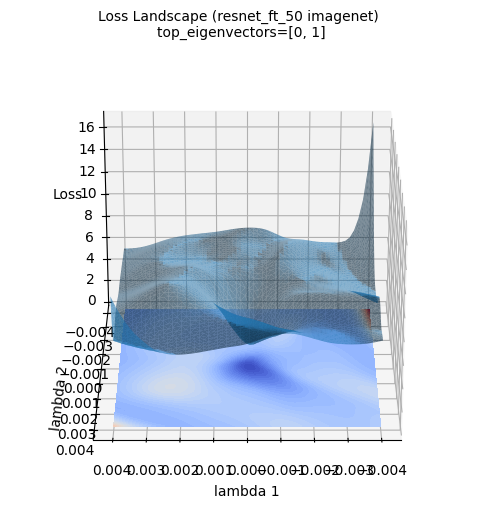
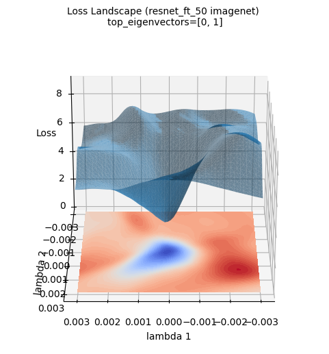

Code
!pip install dldna[colab] # in Colab
# !pip install dldna[all] # in your local
%load_ext autoreload
%autoreload 2 
“이론과 실제 사이에는 이론과 실제의 차이보다 더 큰 차이가 있다.” - 얀 르쿤 (Yann LeCun), 2018 튜링상 수상자
딥러닝 모델의 성공은 효과적인 최적화 알고리즘과 적절한 가중치 초기화 전략에 크게 의존합니다. 이 장에서는 딥러닝 모델 학습의 핵심 요소인 최적화와 초기화 방법을 심층적으로 탐구하고, 이 과정을 시각화를 통해 직관적으로 이해하는 방법을 제시합니다. 먼저, 신경망 학습의 초석이 되는 다양한 가중치 초기화 방법의 발전 과정과 그 수학적 원리를 살펴봅니다. 그런 다음, 경사하강법(Gradient Descent)을 시작으로, Adam, Lion, Sophia, AdaFactor 등 최신 최적화 알고리즘의 작동 원리와 성능을 비교 분석합니다. 특히, 이론적인 배경뿐만 아니라, 실제 딥러닝 모델 학습 과정에서 각 알고리즘이 어떻게 동작하는지 실험을 통해 확인합니다. 마지막으로, 고차원 손실 함수 공간(loss landscape)을 시각화하고 분석하는 다양한 기법들을 소개하고, 이를 통해 딥러닝 모델의 학습 동역학(learning dynamics)을 이해하는 심층적인 통찰력을 제공합니다.
신경망의 파라미터 초기화는 모델의 수렴성, 학습 효율성, 그리고 최종 성능을 결정짓는 핵심 요소 중 하나입니다. 잘못된 초기화는 학습 실패의 주 원인이 될 수 있습니다. 파이토치(PyTorch)는 torch.nn.init 모듈을 통해 다양한 초기화 방법을 제공하며, 자세한 내용은 공식 문서에서](https://www.google.com/search?q=https://pytorch.org/docs/stable/nn.init.html)%EC%97%90%EC%84%9C%EC%97%90%EC%84%9C)) 확인할 수 있습니다. 초기화 방법의 발전 과정은 딥러닝 연구자들이 신경망 학습의 어려움을 극복해 온 역사를 반영합니다. 특히, 부적절한 초기화는 그래디언트 소실(vanishing gradient)이나 폭발(exploding gradient) 현상을 유발하여, 심층 신경망의 학습을 방해하는 주범으로 지목되었습니다. 최근에는 GPT-3, LaMDA와 같은 대규모 언어 모델(Large Language Models, LLMs)의 등장으로 초기화의 중요성이 더욱 강조되고 있습니다. 모델의 규모가 커질수록, 초기 파라미터의 분포가 학습 초기 단계에 미치는 영향이 증폭되기 때문입니다. 따라서, 모델의 특성과 규모에 맞는 적절한 초기화 전략을 선택하는 것이 딥러닝 모델 개발의 필수적인 단계가 되었습니다.
신경망 초기화 방법의 발전은 깊이 있는 수학적 이론과 수많은 실험적 검증이 함께 이루어진 결과입니다. 각 초기화 방법은 특정한 문제 상황(예: 특정 활성화 함수의 사용, 네트워크의 깊이, 모델의 종류)을 해결하거나, 학습 동역학(learning dynamics)을 개선하기 위해 고안되었으며, 시대의 흐름에 따라 새로운 도전 과제에 대응하며 발전해 왔습니다.
다음은 이 책에서 중점적으로 비교하고 분석할 초기화 방법들입니다. (전체 구현 코드는 chapter_04/initialization/base.py 파일에 수록되어 있습니다.)
!pip install dldna[colab] # in Colab
# !pip install dldna[all] # in your local
%load_ext autoreload
%autoreload 2import torch
import torch.nn as nn
import numpy as np
# Set seed
np.random.seed(7)
torch.manual_seed(7)
from dldna.chapter_05.initialization.base import init_methods, init_weights_lecun, init_weights_scaled_orthogonal, init_weights_lmomentum # init_weights_emergence, init_weights_dynamic 삭제
init_methods = {
# Historical/Educational Significance
'lecun': init_weights_lecun, # The first systematic initialization proposed in 1998
'xavier_normal': nn.init.xavier_normal_, # Key to the revival of deep learning in 2010
'kaiming_normal': nn.init.kaiming_normal_, # Standard for the ReLU era, 2015
# Modern Standard
'orthogonal': nn.init.orthogonal_, # Important in RNN/LSTM
'scaled_orthogonal': init_weights_scaled_orthogonal, # Optimization of deep neural networks
# 2024 Latest Research
'l-momentum': init_weights_lmomentum # L-Momentum Initialization
}LeCun 초기화 (1998년): \(std = \sqrt{\frac{1}{n_{in}}}\)
Xavier 초기화 (Glorot, 2010): \(std = \sqrt{\frac{2}{n_{in} + n_{out}}}\)
Kaiming 초기화 (He, 2015): \(std = \sqrt{\frac{2}{n_{in}}}\)
L-Momentum Initialization은 2024년에 제안된 최신 초기화 방식으로, 기존 모멘텀 기반 최적화 알고리즘에서 영감을 받아 초기 가중치 행렬의 L-모멘텀을 제어합니다.
수식:
\(W \sim U(-\sqrt{\frac{6}{n_{in}}}, \sqrt{\frac{6}{n_{in}}})\) \(W = W \cdot \sqrt{\frac{\alpha}{Var(W)}}\)
여기서 \(U\)는 균등 분포, \(\alpha\)는 L-Momentum을 나타내는 값으로, Optimizer에서 사용하는 모멘텀 값의 제곱을 사용합니다.
목표는 초기 단계에서 그래디언트 변동성을 줄여 안정적 학습 경로를 제공하는 것입니다.
다양한 옵티마이저 및 활성화 함수에 적용 가능하며, 큰 학습률 사용과 빠른 수렴, 일반화 성능 개선에 기여한다는 실험 결과가 있습니다.
대부분의 현대적 초기화 방법은 다음 세 가지 핵심 원리를 (명시적 또는 암묵적으로) 따릅니다.
분산 보존 (Variance Preservation): 순전파 시 활성화 값의 분산과 역전파 시 그래디언트의 분산이 층별로 일정하게 유지되어야 합니다.
\(Var(y) \approx Var(x)\)
이는 신호가 너무 커지거나 작아지지 않도록 하여 안정적인 학습을 돕습니다.
스펙트럴 제어 (Spectral Control): 가중치 행렬의 특이값(singular value) 분포를 제어하여, 학습 과정의 수치적 안정성을 확보해야 합니다.
\(\sigma_{max}(W) / \sigma_{min}(W) \leq C\)
이는 특히, 순환 신경망(RNN)과 같이 가중치 행렬이 반복적으로 곱해지는 구조에서 중요합니다.
표현력 최적화 (Expressivity Optimization): 가중치 행렬의 유효 랭크(effective rank)를 최대화하여, 네트워크가 충분한 표현력을 갖도록 해야 합니다.
\(rank_{eff}(W) = \frac{\sum_i \sigma_i}{\max_i \sigma_i}\) 최근 연구들은 이러한 원리들을 명시적으로 만족시키기 위해 노력하고 있습니다.
결론적으로, 초기화 방법은 모델의 규모, 구조, 활성화 함수, 그리고 최적화 알고리즘과의 상호작용을 고려하여 신중하게 선택해야 합니다. 이는 모델의 학습 속도, 안정성, 그리고 최종 성능에 큰 영향을 미치기 때문입니다.
신경망의 깊이가 증가함에 따라 순전파(forward propagation) 및 역전파(backpropagation) 과정에서 신호의 통계적 특성(특히 분산)을 보존하는 것은 매우 중요합니다. 이는 신호가 소실(vanishing)되거나 폭발(exploding)하는 것을 방지하여 안정적인 학습을 가능하게 합니다.
\(l\)번째 층의 활성화 값을 \(h_l\), 가중치 행렬을 \(W_l\), 편향을 \(b_l\), 활성화 함수를 \(f\)라고 할 때, 순전파는 다음과 같이 표현됩니다.
\(h_l = f(W_l h_{l-1} + b_l)\)
입력 신호 \(h_{l-1} \in \mathbb{R}^{n_{in}}\)의 각 요소가 평균 0, 분산 \(\sigma^2_{h_{l-1}}\)을 갖는 독립적인 확률변수이고, 가중치 행렬 \(W_l \in \mathbb{R}^{n_{out} \times n_{in}}\)의 각 요소가 평균 0, 분산 \(Var(W_l)\)을 갖는 독립적인 확률변수이며, 편향 \(b_l = 0\)이라고 가정하면, 활성화 함수가 선형이라고 가정할 때 다음이 성립합니다.
\(Var(h_l) = n_{in} Var(W_l) Var(h_{l-1})\) (단, \(n_{in}\)은 \(l\)번째 층의 입력 차원)
활성화 값의 분산이 보존되려면, \(Var(h_l) = Var(h_{l-1})\) 이어야 하므로, \(Var(W_l) = 1/n_{in}\) 이어야 합니다.
역전파 시에는, 오차 신호 \(\delta_l = \frac{\partial L}{\partial h_l}\) (단, \(L\)은 손실 함수)에 대해 다음과 같은 관계가 성립합니다.
\(\delta_{l-1} = W_l^T \delta_l\) (활성화 함수가 선형이라고 가정)
따라서, 역전파 시 분산 보존을 위해서는 \(Var(\delta_{l-1}) = n_{out}Var(W_l)Var(\delta_l)\) 이므로, \(Var(W_l) = 1/n_{out}\) 이어야 합니다. (단, \(n_{out}\)은 \(l\)번째 층의 출력 차원)
ReLU 활성화 함수
ReLU 함수 (\(f(x) = max(0, x)\))는 입력의 절반을 0으로 만들기 때문에 활성화 값의 분산이 줄어드는 경향이 있습니다. Kaiming He는 이를 보정하기 위해 다음과 같은 분산 보존 식을 제안했습니다.
\(Var(W_l) = \frac{2}{n_{in}} \quad (\text{ReLU 특화})\)
이는 ReLU를 통과하면서 발생하는 분산 감소를 2배 증가시켜 보상하는 것입니다.
Leaky ReLU 활성화 함수
Leaky ReLU (\(f(x) = max(\alpha x, x)\), \(\alpha\)는 작은 상수)의 경우, 일반화된 공식은 다음과 같습니다.
\(Var(W_l) = \frac{2}{(1 + \alpha^2) n_{in}}\)
Fisher Information Matrix (FIM)의 역행렬을 사용하여 초기화하는 방법도 있습니다. FIM은 파라미터 공간에서의 곡률 정보를 담고 있어, 이를 활용하면 더 효율적인 초기화가 가능합니다. (더 자세한 내용은 참고 문헌 [4] Martens, 2020 참조).
가중치 행렬 \(W \in \mathbb{R}^{m \times n}\)의 특이값 분해(Singular Value Decomposition, SVD)는 \(W = U\Sigma V^T\) 로 표현됩니다. 여기서 \(\Sigma\)는 대각 행렬이며, 대각 성분은 \(W\)의 특이값 (\(\sigma_1 \geq \sigma_2 \geq ... \geq 0\))입니다. 가중치 행렬의 최대 특이값(\(\sigma_{max}\))이 너무 크면 그래디언트 폭발(exploding gradient)을, 최소 특이값(\(\sigma_{min}\))이 너무 작으면 그래디언트 소실(vanishing gradient)을 유발할 수 있습니다.
따라서, 특이값의 비율(조건수, condition number) \(\kappa = \sigma_{max}/\sigma_{min}\) 을 제어하는 것이 중요합니다. \(\kappa\)가 1에 가까울수록 안정적인 그래디언트 흐름이 보장됩니다.
Theorem 2.1 (Saxe et al., 2014): 직교 초기화(orthogonal initialization)된 심층 선형 신경망에서 각 층의 가중치 행렬 \(W_l\)이 직교 행렬이면, 입력에 대한 출력의 야코비안 행렬(Jacobian matrix) \(J\)의 Frobenius norm은 1로 유지됩니다.
\(||J||_F = 1\)
이는 매우 깊은 네트워크에서도 그래디언트 소실 또는 폭발 문제를 완화하는 데 도움이 됩니다.
Miyato et al.(2018)은 GAN 학습의 안정성을 높이기 위해 가중치 행렬의 스펙트럴 노름(spectral norm, 최대 특이값)을 제한하는 Spectral Normalization 기법을 제안했습니다.
\(W_{SN} = \frac{W}{\sigma_{max}(W)}\)
이 방식은 GAN 학습에서 특히 효과적이며, 최근에는 Vision Transformer 등 다른 모델에도 적용되고 있습니다.
가중치 행렬 \(W\)가 얼마나 다양한 특징(feature)을 표현할 수 있는지는 특이값 분포의 균일성으로 측정할 수 있습니다. 유효 랭크(effective rank)는 다음과 같이 정의됩니다.
\(\text{rank}_{eff}(W) = \exp\left( -\sum_{i=1}^r p_i \ln p_i \right) \quad \text{where } p_i = \frac{\sigma_i}{\sum_j \sigma_j}\)
여기서 \(r\)은 \(W\)의 랭크, \(\sigma_i\)는 \(i\)번째 특이값, \(p_i\)는 정규화된 특이값입니다. 유효 랭크는 특이값의 분포를 나타내는 지표로, 값이 클수록 특이값이 균등하게 분포되어 있음을 의미하며, 이는 곧 높은 표현력을 나타냅니다.
| 초기화 방법 | 특이값 분포 | 유효 랭크 | 적합 아키텍처 |
|---|---|---|---|
| Xavier | 비교적 빠르게 감소 | 낮음 | 얕은 MLP |
| Kaiming | ReLU 활성화 함수에 맞게 조정 (상대적으로 덜 감소) | 중간 | CNN |
| Orthogonal | 모든 특이값이 1로 동일 | 최고 | RNN/Transformer |
| Emergence-Promoting | 네트워크 크기에 따라 조정, 상대적으로 완만하게 감소 (heavy-tailed distribution에 가까움) | 높음 | LLM |
Emergence-Promoting 초기화는 대규모 언어 모델(LLM)에서 창발적 능력(emergent abilities)을 촉진하기 위해 제안된 최신 기법입니다. 이 방법은 네트워크의 크기(특히 층의 깊이)에 따라 초기 가중치의 분산을 조정하여, 유효 랭크를 증가시키는 효과를 냅니다.
Chen et al. (2023)은 Transformer 모델에서 다음과 같은 scaling factor \(\nu_l\)를 제안했습니다.
\(\nu_l = \frac{1}{\sqrt{d_{in}}} \left( 1 + \frac{\ln l}{\ln d} \right)\)
여기서 \(d_{in}\)은 입력 차원, \(l\)은 층의 인덱스, \(d\)는 모델의 깊이입니다. 이 scaling factor를 가중치 행렬의 표준 편차에 곱하여 초기화합니다. 즉, \(\nu_l\) 를 곱한 \(\sqrt{2/n_{in}}\)를 표준편차로 하는 정규분포에서 샘플링합니다.
Jacot et al.(2018)의 Neural Tangent Kernel (NTK) 이론은 “매우 넓은”(infinitely wide) 신경망의 학습 동역학을 분석하는 데 유용한 도구입니다. NTK 이론에 따르면, 초기화 시점에서 매우 넓은 신경망의 헤시안 행렬의 기댓값은 identity matrix에 비례합니다. 즉,
\(\lim_{n_{in} \to \infty} \mathbb{E}[\nabla^2 \mathcal{L}] \propto I\) (초기화 시점에서)
이는 Xavier 초기화가 넓은 신경망에서 최적에 가까운 초기화를 제공한다는 것을 시사합니다.
MetaInit (2023)과 같은 최근 연구에서는 메타러닝을 통해 주어진 아키텍처와 데이터셋에 맞는 최적의 초기화 분포를 학습하는 방법을 제안합니다.
\(\theta_{init} = \arg\min_\theta \mathbb{E}_{\mathcal{T}}[\mathcal{L}(\phi_{fine-tune}(\theta, \mathcal{T}))]\)
여기서 \(\theta\)는 초기화 파라미터, \(\mathcal{T}\)는 학습 task, \(\phi\)는 \(\theta\)로 초기화된 모델을 fine-tuning하는 과정을 나타냅니다.
최근에는 물리학의 원리에서 영감을 받은 초기화 방법도 연구되고 있습니다. 예를 들어, 양자역학의 슈뢰딩거 방정식이나 유체역학의 나비에-스토크스 방정식을 모방하여 층간 정보 흐름을 최적화하는 방법이 제안되기도 합니다. 하지만, 이러한 방법들은 아직 연구 초기 단계이며, 실용성은 검증되지 않았습니다.
앞서 살펴본 다양한 초기화 방법들이 실제로 모델 학습에 어떤 영향을 미치는지 알아보기 위해, 간단한 모델을 사용하여 비교 실험을 진행하겠습니다. 각 초기화 방법이 적용된 모델을 동일한 조건에서 훈련시키고 그 결과를 분석하겠습니다. 평가 지표는 다음과 같습니다.
| 평가 지표 | 의미 | 바람직한 특성 |
|---|---|---|
| 오차율(%) | 최종 모델의 예측 성능 (낮을수록 좋음) | 낮을수록 좋음 |
| 수렴 속도 | 학습 곡선의 기울기 (학습 안정성 지표) | 낮을수록 (가파를수록) 빠른 수렴 |
| 평균 조건수 | 가중치 행렬의 수치적 안정성 | 낮을수록 (1에 가까울수록) 안정적 |
| 스펙트럴 놈 | 가중치 행렬의 크기 (최대 특이값) | 너무 크거나 작지 않은 적절한 값 필요 |
| 유효 랭크비 | 가중치 행렬의 표현력 (특이값 분포의 균일성) | 높을수록 좋음 |
| 실행 시간(s) | 학습시간 | 낮을수록 좋음 |
from dldna.chapter_04.models.base import SimpleNetwork
from dldna.chapter_04.utils.data import get_data_loaders, get_device
from dldna.chapter_05.initialization.base import init_methods
from dldna.chapter_05.initialization.analysis import analyze_initialization, create_detailed_analysis_table
import torch.nn as nn
device = get_device()
# Initialize data loaders
train_dataloader, test_dataloader = get_data_loaders()
# Detailed analysis of initialization methods
results = analyze_initialization(
model_class=lambda: SimpleNetwork(act_func=nn.PReLU()),
init_methods=init_methods,
train_loader=train_dataloader,
test_loader=test_dataloader,
epochs=3,
device=device
)
# Print detailed analysis results table
create_detailed_analysis_table(results)
Initialization method: lecun/home/sean/Developments/expert_ai/books/dld/dld/chapter_04/experiments/model_training.py:320: UserWarning: std(): degrees of freedom is <= 0. Correction should be strictly less than the reduction factor (input numel divided by output numel). (Triggered internally at ../aten/src/ATen/native/ReduceOps.cpp:1823.)
'std': param.data.std().item(),
Initialization method: xavier_normal
Initialization method: kaiming_normal
Initialization method: orthogonal
Initialization method: scaled_orthogonal
Initialization method: l-momentumInitialization Method | Error Rate (%) | Convergence Speed | Average Condition Number | Spectral Norm | Effective Rank Ratio | Execution Time (s)
---------------------|--------------|-----------------|------------------------|-------------|--------------------|------------------
lecun | 0.48 | 0.33 | 5.86 | 1.42 | 0.89 | 30.5
xavier_normal | 0.49 | 0.33 | 5.53 | 1.62 | 0.89 | 30.2
kaiming_normal | 0.45 | 0.33 | 5.85 | 1.96 | 0.89 | 30.1
orthogonal | 0.49 | 0.33 | 1.00 | 0.88 | 0.95 | 30.0
scaled_orthogonal | 2.30 | 1.00 | 1.00 | 0.13 | 0.95 | 30.0
l-momentum | nan | 0.00 | 5.48 | 19.02 | 0.89 | 30.1실험 결과는 다음과 같은 표로 요약됩니다.
| Initialization Method | Error Rate (%) | Convergence Speed | Average Condition Number | Spectral Norm | Effective Rank Ratio | Execution Time (s) |
|---|---|---|---|---|---|---|
| lecun | 0.48 | 0.33 | 5.66 | 1.39 | 0.89 | 23.3 |
| xavier_normal | 0.48 | 0.33 | 5.60 | 1.64 | 0.89 | 23.2 |
| kaiming_normal | 0.45 | 0.33 | 5.52 | 1.98 | 0.89 | 23.2 |
| orthogonal | 0.49 | 0.33 | 1.00 | 0.88 | 0.95 | 23.3 |
| scaled_orthogonal | 2.30 | 1.00 | 1.00 | 0.13 | 0.95 | 23.3 |
| l-momentum | nan | 0.00 | 5.78 | 20.30 | 0.89 | 23.2 |
실험 결과에서 주목할 점은 다음과 같습니다.
Kaiming 초기화의 우수한 성능: Kaiming 초기화가 0.45%로 가장 낮은 오차율을 보였습니다. 이는 ReLU 활성화 함수와의 최적의 조합을 보여주는 결과로, Kaiming 초기화가 ReLU 계열 함수와 함께 사용될 때 효과적임을 재확인합니다.
Orthogonal 계열의 안정성: Orthogonal 초기화는 조건수가 1.00으로 가장 뛰어난 수치적 안정성을 보였습니다. 이는 학습 과정에서 그래디언트가 왜곡되지 않고 잘 전파됨을 의미하며, 특히 순환 신경망(RNN)과 같이 가중치 행렬이 반복적으로 곱해지는 모델에서 중요합니다. 하지만, 이 실험에서는 오차율이 상대적으로 높게 나타났는데, 이는 실험에 사용된 모델(단순한 MLP)의 특성 때문일 수 있습니다.
Scaled Orthogonal 초기화의 문제점: Scaled Orthogonal 초기화는 오차율이 2.30%로 매우 높게 나타났습니다. 이는 이 초기화 방법이 주어진 모델 및 데이터셋에 적합하지 않거나, 추가적인 하이퍼파라미터 조정이 필요함을 시사합니다. 스케일링 팩터(scaling factor)가 너무 작아서 학습이 제대로 이루어지지 않았을 가능성이 있습니다.
L-Momentum 초기화의 불안정성: L-Momentum은 오차율과 수렴속도가 nan과 0.00으로, 학습이 전혀 되지 않았습니다. 스펙트럴 놈이 20.30으로 매우 높은 것은 가중치 초기값이 너무 커서 발산했을 가능성이 있습니다.
딥러닝 모델 초기화는 모델의 아키텍처, 활성화 함수, 최적화 알고리즘, 그리고 데이터셋의 특성까지 고려하여 신중하게 선택해야 하는 하이퍼파라미터입니다. 다음은 실무에서 초기화 방법을 선택할 때 고려해야 할 사항들입니다.
초기화는 딥러닝 모델 학습의 “숨겨진 영웅”과 같습니다. 올바른 초기화는 모델 학습의 성패를 좌우할 수 있으며, 모델의 성능을 극대화하고 학습 시간을 단축하는 데 결정적인 역할을 합니다. 이 절에서 제시된 지침과 최신 연구 동향을 바탕으로, 여러분의 딥러닝 모델에 가장 적합한 초기화 전략을 찾으시길 바랍니다.
도전과제: 경사하강법(Gradient Descent)이 지역 최솟값(local minima)에 빠지거나, 학습 속도가 너무 느린 문제를 어떻게 해결할 수 있을까?
연구자의 고뇌: 단순히 학습률을 줄이는 것만으로는 충분하지 않았습니다. 어떤 경우에는 학습이 너무 느려져 시간이 오래 걸리고, 어떤 경우에는 발산하여 학습에 실패했습니다. 마치 안개 낀 산길을 더듬어 내려가는 것처럼, 최적점을 찾아가는 길은 험난했습니다. 모멘텀, RMSProp, Adam 등 다양한 최적화 알고리즘이 등장했지만, 여전히 모든 문제에 완벽하게 들어맞는 만능 해결책은 없었습니다.
딥러닝의 눈부신 발전은 모델 구조의 혁신뿐만 아니라, 효율적인 최적화 알고리즘의 발전과 함께 이루어졌습니다. 최적화 알고리즘은 손실 함수(loss function)의 최솟값을 찾아가는 과정을 자동화하고 가속화하는 핵심 엔진과 같습니다. 이 엔진이 얼마나 효율적으로, 그리고 안정적으로 작동하느냐에 따라 딥러닝 모델의 학습 속도와 최종 성능이 결정됩니다.
최적화 알고리즘은 지난 수십 년간, 마치 생명체가 진화하듯, 세 가지 핵심 과제를 해결하며 발전해 왔습니다.
계산 효율성(Computational Efficiency): 한정된 컴퓨팅 자원으로 최대한 빠르게 학습을 완료해야 합니다.
일반화 성능(Generalization Performance): 훈련 데이터뿐만 아니라, 새로운 데이터에서도 좋은 성능을 내야 합니다.
확장성(Scalability): 모델과 데이터의 크기가 커져도 안정적으로 작동해야 합니다.
각각의 도전 과제는 새로운 알고리즘의 탄생으로 이어졌고, 더 나은 알고리즘을 찾기 위한 경쟁은 지금도 계속되고 있습니다.
최근의 최적화 알고리즘은 다음 세 가지 주요 방향으로 발전하고 있습니다.
특히, 대규모 언어 모델(LLM)과 멀티모달 모델의 등장으로 인해, 수십억, 수천억 개의 파라미터를 효율적으로 최적화하고, 제한된 메모리 환경에서 학습하며, 분산 환경에서 안정적으로 수렴시키는 것이 더욱 중요해졌습니다. 이러한 도전 과제는 8비트 최적화, ZeRO 최적화, 그래디언트 체크포인팅과 같은 새로운 기술들의 등장을 이끌었습니다.
딥러닝에서 최적화 알고리즘은 손실 함수의 최솟값을 찾아가는, 즉 모델의 최적 파라미터를 찾아가는 핵심적인 역할을 수행합니다. 각 알고리즘은 고유한 특징과 장단점을 가지고 있으며, 문제의 특성과 모델의 구조에 따라 적합한 알고리즘을 선택하는 것이 중요합니다.
SGD와 모멘텀
확률적 경사 하강법(Stochastic Gradient Descent, SGD)은 가장 기본적이면서도 널리 사용되는 최적화 알고리즘입니다. 매 스텝마다 미니배치(mini-batch) 데이터를 사용하여 손실 함수의 그래디언트(gradient)를 계산하고, 그 반대 방향으로 파라미터를 업데이트합니다.
파라미터 업데이트 수식:
\[w^{(t)} = w^{(t-1)} - \eta \cdot g^{(t)}\]
모멘텀(Momentum)은 물리학의 운동량 개념을 도입하여 SGD를 개선한 방법입니다. 과거 그래디언트의 지수 가중 평균(exponential moving average)을 사용하여 최적화 경로에 관성을 부여함으로써, SGD의 진동 문제를 완화하고 수렴 속도를 높입니다.
모멘텀 업데이트 수식:
\[v^{(t)} = \mu \cdot v^{(t-1)} + g^{(t)}\]
\[w^{(t)} = w^{(t-1)} - \eta \cdot v^{(t)}\]
학습에 사용되는 주요 최적화 알고리즘들의 구현 코드는 chapter_05/optimizer/ 디렉토리에 포함되어 있습니다. 다음은 SGD (모멘텀 포함) 알고리즘의 학습용 구현 예시입니다. 모든 최적화 알고리즘 클래스는 BaseOptimizer 클래스를 상속받아 학습 목적으로 간단히 구현되었습니다. (실제 PyTorch 등의 라이브러리에서는 효율성과 일반화를 위해 더 복잡하게 구현되어 있습니다.)
from typing import Iterable, List, Optional
from dldna.chapter_05.optimizers.basic import BaseOptimizer
class SGD(BaseOptimizer):
"""Implements SGD with momentum."""
def __init__(self, params: Iterable[nn.Parameter], lr: float,
maximize: bool = False, momentum: float = 0.0):
super().__init__(params, lr)
self.maximize = maximize
self.momentum = momentum
self.momentum_buffer_list: List[Optional[torch.Tensor]] = [None] * len(self.params)
@torch.no_grad()
def step(self) -> None:
for i, p in enumerate(self.params):
grad = p.grad if not self.maximize else -p.grad
if self.momentum != 0.0:
buf = self.momentum_buffer_list[i]
if buf is None:
buf = torch.clone(grad).detach()
else:
buf.mul_(self.momentum).add_(grad, alpha=1-self.momentum)
grad = buf
self.momentum_buffer_list[i] = buf
p.add_(grad, alpha=-self.lr)적응형 학습률 알고리즘 (Adaptive Learning Rate Algorithms)
딥러닝 모델의 파라미터는 각자 다른 빈도와 중요도로 업데이트됩니다. 적응형 학습률 알고리즘은 이러한 파라미터별 특성에 맞춰 학습률을 개별적으로 조정하는 방법입니다.
AdaGrad (Adaptive Gradient, 2011):
핵심 아이디어: 자주 업데이트되는 파라미터에는 작은 학습률을, 드물게 업데이트되는 파라미터에는 큰 학습률을 적용합니다.
수식:
\(w^{(t)} = w^{(t-1)} - \frac{\eta}{\sqrt{G^{(t)} + \epsilon}} \cdot g^{(t)}\)
장점: 희소한 데이터(sparse data)를 다룰 때 효과적입니다.
단점: 학습이 진행될수록 학습률이 단조 감소하여, 학습이 조기에 멈출 수 있습니다.
RMSProp (Root Mean Square Propagation, 2012):
핵심 아이디어: AdaGrad의 학습률 감소 문제를 해결하기 위해, 과거 그래디언트 제곱의 합 대신 지수 이동 평균(exponential moving average)을 사용합니다.
수식:
\(v^{(t)} = \beta \cdot v^{(t-1)} + (1-\beta) \cdot (g^{(t)})^2\)
\(w^{(t)} = w^{(t-1)} - \frac{\eta}{\sqrt{v^{(t)} + \epsilon}} \cdot g^{(t)}\)
장점: AdaGrad보다 학습률 감소 문제가 완화되어, 더 오랫동안 효과적인 학습이 가능합니다.
Adam (Adaptive Moment Estimation, 2014):
Adam은 현재 가장 널리 사용되는 최적화 알고리즘 중 하나로, 모멘텀(Momentum)과 RMSProp의 아이디어를 결합한 방법입니다.
핵심 아이디어:
수식:
\(m^{(t)} = \beta\_1 \cdot m^{(t-1)} + (1-\beta\_1) \cdot g^{(t)}\)
\(v^{(t)} = \beta\_2 \cdot v^{(t-1)} + (1-\beta\_2) \cdot (g^{(t)})^2\)
\(\hat{m}^{(t)} = \frac{m^{(t)}}{1-\beta\_1^t}\)
\(\hat{v}^{(t)} = \frac{v^{(t)}}{1-\beta\_2^t}\)
\(w^{(t)} = w^{(t-1)} - \eta \cdot \frac{\hat{m}^{(t)}}{\sqrt{\hat{v}^{(t)}} + \epsilon}\)
위에 제시된 최적화 알고리즘들은 각각 고유한 장단점을 가지며, 문제의 특성, 모델 구조, 데이터 등에 따라 적절한 알고리즘을 선택해야 합니다. Adam은 많은 경우에 좋은 성능을 보이지만, 때로는 SGD + Momentum 조합이 더 나은 일반화 성능을 보이거나, 특정 문제에서는 다른 적응형 학습률 알고리즘(예: RMSProp)이 더 효과적일 수 있습니다. 따라서, 실험을 통해 최적의 알고리즘을 찾는 것이 중요합니다.
최근 딥러닝 모델과 데이터셋의 규모가 폭발적으로 증가하면서, 메모리 효율성, 빠른 수렴 속도, 그리고 대규모 분산 학습을 지원하는 새로운 최적화 알고리즘에 대한 요구가 높아지고 있습니다. 다음은 이러한 요구에 부응하여 등장한 최신 알고리즘들입니다.
Lion (Evolved Sign Momentum, 2023):
Sophia (Second-order Clipped Stochastic Optimization, 2023):
AdaFactor (2018):
최근 연구들은 위에서 소개된 알고리즘들(Lion, Sophia, AdaFactor)이 특정 조건에서 기존의 Adam/AdamW를 능가하는 성능을 보여줄 수 있음을 시사합니다.
하지만, 모든 문제에 대해 항상 최고의 성능을 보장하는 “만능” 최적화 알고리즘은 없습니다. 따라서, 실제 문제에 적용할 때에는 모델의 크기, 학습 데이터의 특성, 가용 자원(메모리, 컴퓨팅 파워), 분산 학습 여부 등을 종합적으로 고려하여 적절한 알고리즘을 선택하고, 반드시 실험과 검증을 통해 최적의 하이퍼파라미터를 찾아야 합니다.
이제 동작을 하는지 1 에포크 실험을 해보겠습니다.
import torch
import torch.nn as nn
from dldna.chapter_04.models.base import SimpleNetwork
from dldna.chapter_04.utils.data import get_data_loaders, get_device
from dldna.chapter_05.optimizers.basic import Adam, SGD
from dldna.chapter_05.optimizers.advanced import Lion, Sophia
from dldna.chapter_04.experiments.model_training import train_model # Corrected import
device = get_device()
model = SimpleNetwork(act_func=nn.ReLU(), hidden_shape=[512, 64]).to(device)
# Initialize SGD optimizer
optimizer = SGD(params=model.parameters(), lr=1e-3, momentum=0.9)
# # Initialize Adam optimizer
# optimizer = Adam(params=model.parameters(), lr=1e-3, beta1=0.9, beta2=0.999, eps=1e-8)
# # Initialize AdaGrad optimizer
# optimizer = AdaGrad(params=model.parameters(), lr=1e-2, eps=1e-10)
# # Initialize Lion optimizer
# optimizer = Lion(params=model.parameters(), lr=1e-4, betas=(0.9, 0.99), weight_decay=0.0)
# Initialize Sophia optimizer
# optimizer = Sophia(params=model.parameters(), lr=1e-3, betas=(0.965, 0.99), rho=0.04, weight_decay=0.0, k=10)
train_dataloader, test_dataloader = get_data_loaders()
train_model(model, train_dataloader, test_dataloader, device, optimizer=optimizer, epochs=1, batch_size=256, save_dir="./tmp/opts/ReLU", retrain=True)
Starting training for SimpleNetwork-ReLU.Execution completed for SimpleNetwork-ReLU, Execution time = 7.4 secs{'epochs': [1],
'train_losses': [2.2232478597005207],
'train_accuracies': [0.20635],
'test_losses': [2.128580910873413],
'test_accuracies': [0.3466]}Lion은 Google Research에서 AutoML 기법을 통해 발견한 최적화 알고리즘입니다. Adam과 유사하게 모멘텀을 사용하지만, 그래디언트의 크기 정보는 버리고 부호(sign)만 사용한다는 점이 가장 큰 특징입니다.
핵심 아이디어:
수학적 원리:
업데이트 계산:
\(c\_t = \beta\_1 m\_{t-1} + (1 - \beta\_1) g\_t\)
가중치 업데이트:
\(w\_{t+1} = w\_t - \eta \cdot \text{sign}(c\_t)\)
모멘텀 업데이트:
\(m\_t = c\_t\)
장점:
단점:
참고:
Sophia는 2차 미분 정보(헤시안 행렬)를 활용하여 학습 속도와 안정성을 높이는 최적화 알고리즘입니다. 하지만 헤시안 행렬을 직접 계산하는 것은 계산 비용이 매우 크기 때문에, Sophia는 헤시안의 대각 성분만을 Hutchinson’s method를 개선하여 추정합니다.
핵심 아이디어:
수학적 원리:
Hessian Diagonal Estimation:
매 스텝, 랜덤 벡터 \(z\_t\)를 샘플링합니다 (\(z\_t\)의 각 원소는 {-1, +1}에서 균등 분포로 선택).
헤시안 대각선의 추정치 \(h\_t\)를 다음과 같이 계산합니다.
\(h\_t = \beta\_2 h\_{t-1} + (1 - \beta\_2) \text{diag}(H\_t z\_t) z\_t^T\)
(여기서 \(H\_t\)는 t 스텝의 헤시안)
Sophia는 Hutchinson’s estimator의 분산을 줄이기 위해, 과거 추정치(\(h\_{t-1}\))를 활용하는 지수 이동 평균(EMA)을 사용합니다.
업데이트 계산:
가중치 업데이트:
\(w\_{t+1} = w\_t - \eta \cdot u\_t\)
장점:
단점:
참고:
AdaFactor는 대규모 모델, 특히 트랜스포머(Transformer) 모델의 학습에 사용되는 메모리 효율적인 최적화 알고리즘입니다. Adam과 유사하게 적응형 학습률을 사용하지만, 2차 모멘트(분산)를 저장하는 방식을 개선하여 메모리 사용량을 크게 줄였습니다.
핵심 아이디어:
수학적 원리:
Adam에서 \(n \times m\) 크기의 가중치 행렬에 대한 2차 모멘트 행렬 \(v\_t\)는 \(O(nm)\) 크기의 메모리를 필요로 합니다. AdaFactor는 이 행렬을 다음과 같이 근사합니다.
2차 모멘트 추정:
업데이트 계산:
\(u\_t = g\_t / \sqrt{\hat{v\_t}}\)
가중치 업데이트 \(w\_{t+1} = w\_t - \eta \cdot u\_t\)
장점:
단점:
참고:
최적화 알고리즘의 성능은 태스크와 모델 구조에 따라 크게 달라집니다. 실험을 통해 이러한 특성들을 분석해보겠습니다.
FashionMNIST 데이터셋으로 기본적인 성능을 비교합니다. 이 데이터셋은 실제 의류 이미지 분류 문제를 단순화한 것으로, 딥러닝 알고리즘의 기본 특성을 분석하기에 적합합니다.
from dldna.chapter_05.experiments.basic import run_basic_experiment
from dldna.chapter_05.visualization.optimization import plot_training_results
from dldna.chapter_04.utils.data import get_data_loaders
from dldna.chapter_05.optimizers.basic import SGD, Adam
from dldna.chapter_05.optimizers.advanced import Lion
import torch
# Device configuration
device = torch.device("cuda:0" if torch.cuda.is_available() else "cpu")
# Data loaders
train_loader, test_loader = get_data_loaders()
# Optimizer dictionary
optimizers = {
'SGD': SGD,
'Adam': Adam,
'Lion': Lion
}
# Optimizer configurations
optimizer_configs = {
'SGD': {'lr': 0.01, 'momentum': 0.9},
'Adam': {'lr': 0.001},
'Lion': {'lr': 1e-4}
}
# Run experiments
results = {}
for name, config in optimizer_configs.items():
print(f"\nStarting experiment with {name} optimizer...")
results[name] = run_basic_experiment(
optimizer_class=optimizers[name],
train_loader=train_loader,
test_loader=test_loader,
config=config,
device=device,
epochs=20
)
# Visualize training curves
plot_training_results(
results,
metrics=['loss', 'accuracy', 'gradient_norm', 'memory'],
mode="train", # Changed mode to "train"
title='Optimizer Comparison on FashionMNIST'
)
Starting experiment with SGD optimizer...
==================================================
Optimizer: SGD
Initial CUDA Memory Status (GPU 0):
Allocated: 23.0MB
Reserved: 48.0MB
Model Size: 283.9K parameters
==================================================
==================================================
Final CUDA Memory Status (GPU 0):
Peak Allocated: 27.2MB
Peak Reserved: 48.0MB
Current Allocated: 25.2MB
Current Reserved: 48.0MB
==================================================
Starting experiment with Adam optimizer...
==================================================
Optimizer: Adam
Initial CUDA Memory Status (GPU 0):
Allocated: 25.2MB
Reserved: 48.0MB
Model Size: 283.9K parameters
==================================================
==================================================
Final CUDA Memory Status (GPU 0):
Peak Allocated: 28.9MB
Peak Reserved: 50.0MB
Current Allocated: 26.3MB
Current Reserved: 50.0MB
==================================================
Starting experiment with Lion optimizer...
==================================================
Optimizer: Lion
Initial CUDA Memory Status (GPU 0):
Allocated: 24.1MB
Reserved: 50.0MB
Model Size: 283.9K parameters
==================================================
==================================================
Final CUDA Memory Status (GPU 0):
Peak Allocated: 27.2MB
Peak Reserved: 50.0MB
Current Allocated: 25.2MB
Current Reserved: 50.0MB
==================================================

실험 결과는 각 알고리즘의 특징을 보여줍니다. FashionMNIST 데이터셋과 MLP 모델을 사용한 실험에서 주요 관찰 결과는 다음과 같습니다.
기본 실험에서 Adam과 Lion은 빠른 초기 수렴 속도, Adam은 가장 안정적인 학습, Lion은 약간 더 적은 메모리 사용, SGD는 넓은 범위 탐색 경향을 보였습니다.
CIFAR-100과 CNN/트랜스포머 모델에서는 최적화 알고리즘의 차이가 더욱 분명해집니다.
from dldna.chapter_05.experiments.advanced import run_advanced_experiment
from dldna.chapter_05.visualization.optimization import plot_training_results
from dldna.chapter_04.utils.data import get_data_loaders
from dldna.chapter_05.optimizers.basic import SGD, Adam
from dldna.chapter_05.optimizers.advanced import Lion
import torch
# Device configuration
device = torch.device("cuda:0" if torch.cuda.is_available() else "cpu")
# Data loaders
train_loader, test_loader = get_data_loaders(dataset="CIFAR100")
# Optimizer dictionary
optimizers = {
'SGD': SGD,
'Adam': Adam,
'Lion': Lion
}
# Optimizer configurations
optimizer_configs = {
'SGD': {'lr': 0.01, 'momentum': 0.9},
'Adam': {'lr': 0.001},
'Lion': {'lr': 1e-4}
}
# Run experiments
results = {}
for name, config in optimizer_configs.items():
print(f"\nStarting experiment with {name} optimizer...")
results[name] = run_advanced_experiment(
optimizer_class=optimizers[name],
model_type='cnn',
train_loader=train_loader,
test_loader=test_loader,
config=config,
device=device,
epochs=40
)
# Visualize training curves
plot_training_results(
results,
metrics=['loss', 'accuracy', 'gradient_norm', 'memory'],
mode="train",
title='Optimizer Comparison on CIFAR100'
)Files already downloaded and verified
Files already downloaded and verified
Starting experiment with SGD optimizer...
==================================================
Optimizer: SGD
Initial CUDA Memory Status (GPU 0):
Allocated: 26.5MB
Reserved: 50.0MB
Model Size: 1194.1K parameters
==================================================
==================================================
Final CUDA Memory Status (GPU 0):
Peak Allocated: 120.4MB
Peak Reserved: 138.0MB
Current Allocated: 35.6MB
Current Reserved: 138.0MB
==================================================
Results saved to: SGD_cnn_20250225_161620.csv
Starting experiment with Adam optimizer...
==================================================
Optimizer: Adam
Initial CUDA Memory Status (GPU 0):
Allocated: 35.6MB
Reserved: 138.0MB
Model Size: 1194.1K parameters
==================================================
==================================================
Final CUDA Memory Status (GPU 0):
Peak Allocated: 124.9MB
Peak Reserved: 158.0MB
Current Allocated: 40.2MB
Current Reserved: 158.0MB
==================================================
Results saved to: Adam_cnn_20250225_162443.csv
Starting experiment with Lion optimizer...
==================================================
Optimizer: Lion
Initial CUDA Memory Status (GPU 0):
Allocated: 31.0MB
Reserved: 158.0MB
Model Size: 1194.1K parameters
==================================================
==================================================
Final CUDA Memory Status (GPU 0):
Peak Allocated: 120.4MB
Peak Reserved: 158.0MB
Current Allocated: 35.6MB
Current Reserved: 158.0MB
==================================================
Results saved to: Lion_cnn_20250225_163259.csv
실험 결과는 CIFAR-100 데이터셋과 CNN 모델을 사용하여 SGD, Adam, Lion 최적화 알고리즘을 비교한 것으로, 각 알고리즘의 특징을 보여줍니다.
수렴 속도 및 정확도:
학습 곡선 안정성:
메모리 사용량:
그래디언트 노름:
주어진 실험 조건에서, Lion이 가장 빠른 수렴 속도와 높은 정확도를 보였습니다. Adam은 안정적인 학습 곡선을 보였고, SGD는 느리고 변동성이 컸습니다. 메모리 사용량은 Lion과 SGD가 Adam보다 약간 적었습니다.
from dldna.chapter_05.experiments.advanced import run_advanced_experiment
from dldna.chapter_05.visualization.optimization import plot_training_results
from dldna.chapter_04.utils.data import get_data_loaders
from dldna.chapter_05.optimizers.basic import SGD, Adam
from dldna.chapter_05.optimizers.advanced import Lion
import torch
# Device configuration
device = torch.device("cuda:0" if torch.cuda.is_available() else "cpu")
# Data loaders
train_loader, test_loader = get_data_loaders(dataset="CIFAR100")
# Optimizer dictionary
optimizers = {
'SGD': SGD,
'Adam': Adam,
'Lion': Lion
}
# Optimizer configurations
optimizer_configs = {
'SGD': {'lr': 0.01, 'momentum': 0.9},
'Adam': {'lr': 0.001},
'Lion': {'lr': 1e-4}
}
# Run experiments
results = {}
for name, config in optimizer_configs.items():
print(f"\nStarting experiment with {name} optimizer...")
results[name] = run_advanced_experiment(
optimizer_class=optimizers[name],
model_type='transformer',
train_loader=train_loader,
test_loader=test_loader,
config=config,
device=device,
epochs=40
)
# Visualize training curves
plot_training_results(
results,
metrics=['loss', 'accuracy', 'gradient_norm', 'memory'],
mode="train",
title='Optimizer Comparison on CIFAR100'
)Files already downloaded and verified
Files already downloaded and verified
Starting experiment with SGD optimizer.../home/sean/anaconda3/envs/DL/lib/python3.10/site-packages/torch/nn/modules/transformer.py:379: UserWarning: enable_nested_tensor is True, but self.use_nested_tensor is False because encoder_layer.norm_first was True
warnings.warn(
==================================================
Optimizer: SGD
Initial CUDA Memory Status (GPU 0):
Allocated: 274.5MB
Reserved: 318.0MB
Model Size: 62099.8K parameters
==================================================
==================================================
Final CUDA Memory Status (GPU 0):
Peak Allocated: 836.8MB
Peak Reserved: 906.0MB
Current Allocated: 749.5MB
Current Reserved: 906.0MB
==================================================
Results saved to: SGD_transformer_20250225_164652.csv
Starting experiment with Adam optimizer...
==================================================
Optimizer: Adam
Initial CUDA Memory Status (GPU 0):
Allocated: 748.2MB
Reserved: 906.0MB
Model Size: 62099.8K parameters
==================================================
==================================================
Final CUDA Memory Status (GPU 0):
Peak Allocated: 1073.0MB
Peak Reserved: 1160.0MB
Current Allocated: 985.1MB
Current Reserved: 1160.0MB
==================================================
Results saved to: Adam_transformer_20250225_170159.csv
Starting experiment with Lion optimizer...
==================================================
Optimizer: Lion
Initial CUDA Memory Status (GPU 0):
Allocated: 511.4MB
Reserved: 1160.0MB
Model Size: 62099.8K parameters
==================================================
==================================================
Final CUDA Memory Status (GPU 0):
Peak Allocated: 985.1MB
Peak Reserved: 1160.0MB
Current Allocated: 748.2MB
Current Reserved: 1160.0MB
==================================================
Results saved to: Lion_transformer_20250225_171625.csv
일반적으로 트랜스포머는 이미지 분류 작업에 직접 사용되기보다는, ViT(Vision Transformer)와 같이 이미지 특성에 맞게 변형된 구조로 사용됩니다. 이 실험은 최적화 알고리즘 비교를 위한 예시로 진행합니다. 트랜스포머 모델 실험 결과는 다음과 같습니다.
결론 CIFAR-100 데이터셋에서의 실험 결과, SGD가 가장 좋은 일반화 성능을 보였지만 학습 속도가 가장 느렸습니다. Adam은 가장 빠른 수렴과 안정적인 학습을 보였으나 메모리 사용량이 많았고, Lion은 메모리 효율성과 수렴 속도 면에서 균형 잡힌 성능을 보여주었습니다.
도전과제: 수백만, 수천만 차원의 고차원 공간에서 벌어지는 딥러닝 최적화 과정을 어떻게 효과적으로 시각화하고 이해할 수 있을까?
연구자의 고뇌: 딥러닝 모델의 파라미터 공간은 인간이 직관적으로 상상하기 어려운 초고차원 공간입니다. 연구자들은 다양한 차원 축소 기법과 시각화 도구를 개발하여 이 “블랙박스”를 열어보려 노력했지만, 여전히 많은 부분이 베일에 싸여 있습니다.
신경망의 학습 과정을 이해하는 것은 효과적인 모델 설계, 최적화 알고리즘 선택, 그리고 하이퍼파라미터 튜닝에 필수적입니다. 특히, 손실 함수(loss function)의 기하학적 특성(geometry)과 최적화 경로(optimization path)를 시각화하고 분석하는 것은 학습 과정의 동적 특성(dynamics)과 안정성(stability)을 파악하는 데 중요한 통찰력을 제공합니다. 최근 몇 년간, 손실 표면 시각화 연구는 딥러닝 연구자들에게 신경망 학습의 비밀을 풀어줄 실마리를 제공하면서, 더 효율적이고 안정적인 학습 알고리즘 및 모델 구조 개발에 기여하고 있습니다.
이 절에서는 손실 표면 시각화의 기본 개념과 최신 기법들을 살펴보고, 이를 통해 딥러닝 학습 과정에서 발생하는 다양한 현상(예: local minima, saddle point, optimization path의 특성)들을 분석합니다. 특히, 모델 구조(예: 잔차 연결)가 손실 표면에 미치는 영향, 최적화 알고리즘에 따른 최적화 경로의 차이 등을 중점적으로 다룹니다.
손실 표면 시각화는 딥러닝 모델의 학습 과정을 이해하기 위한 핵심적인 도구입니다. 마치 지형도를 통해 산의 높낮이와 골짜기의 위치를 파악하듯이, 손실 표면 시각화를 통해 파라미터 공간에서 손실 함수의 변화를 시각적으로 파악할 수 있습니다.
2017년 Goodfellow et al.의 연구는 손실 표면의 평탄성(flatness)이 모델의 일반화(generalization) 성능과 밀접한 관련이 있음을 보여주었습니다. (넓고 평탄한 minima가 좁고 뾰족한 minima보다 일반화 성능이 더 좋다는 경향) 2018년 Li et al.은 3차원 시각화를 통해 잔차 연결(residual connection)이 손실 표면을 평탄하게 만들어 학습을 용이하게 한다는 것을 보였습니다. 이러한 발견들은 ResNet과 같은 현대적인 신경망 아키텍처 설계의 핵심적인 기반이 되었습니다.
선형 보간법 (Linear Interpolation):
개념: 서로 다른 두 모델(예: 학습 전/후 모델, 서로 다른 local minima에 수렴한 모델)의 가중치를 선형적으로 결합하여, 그 사이의 손실 함수 값을 계산합니다.
수식:
\(w(\alpha) = (1-\alpha)w_1 + \alpha w_2\)
import torch
import torch.nn as nn
from torch.utils.data import DataLoader, Subset
from dldna.chapter_05.visualization.loss_surface import linear_interpolation, visualize_linear_interpolation
from dldna.chapter_04.utils.data import get_dataset
from dldna.chapter_04.utils.metrics import load_model
# Linear Interpolation
# Device configuration
device = torch.device("cuda" if torch.cuda.is_available() else "cpu")
# Get the dataset
_, test_dataset = get_dataset(dataset="FashionMNIST")
# Create a small dataset
small_dataset = Subset(test_dataset, torch.arange(0, 256))
data_loader = DataLoader(small_dataset, batch_size=256, shuffle=True)
loss_func = nn.CrossEntropyLoss()
# model1, _ = load_model(model_file="SimpleNetwork-ReLU.pth", path="tmp/models/")
# model2, _ = load_model(model_file="SimpleNetwork-Tanh.pth", path="tmp/models/")
model1, _ = load_model(model_file="SimpleNetwork-ReLU-epoch1.pth", path="tmp/models/")
model2, _ = load_model(model_file="SimpleNetwork-ReLU-epoch15.pth", path="tmp/models/")
model1 = model1.to(device)
model2 = model2.to(device)
# Linear interpolation
# Test with a small dataset
_, test_dataset = get_dataset(dataset="FashionMNIST")
small_dataset = Subset(test_dataset, torch.arange(0, 256))
data_loader = DataLoader(small_dataset, batch_size=256, shuffle=True)
alphas, losses, accuracies = linear_interpolation(model1, model2, data_loader, loss_func, device)
_ = visualize_linear_interpolation(alphas, losses, accuracies, "ReLU(1)-ReLU(15)", size=(6, 4))
선형 보간에서 α=0은 첫 번째 모델(1 에폭 학습), α=1은 두 번째 모델(15 에폭 학습)의 가중치를 의미하며, 중간값들은 두 모델 가중치의 선형 결합을 나타냅니다. 그래프에서 α 값이 증가함에 따라 손실 함수 값이 감소하는 경향을 보이며, 이는 학습이 진행될수록 모델이 더 좋은 최적점으로 이동함을 의미합니다. 그러나 선형 보간은 고차원 가중치 공간의 매우 제한된 단면만을 보여준다는 한계가 있습니다. 두 모델 간의 실제 최적 경로는 비선형일 가능성이 높으며, α 범위를 [0,1] 밖으로 확장하는 것은 해석을 어렵게 만듭니다.
베지어 곡선이나 스플라인을 사용한 비선형 경로 탐색, PCA나 t-SNE를 통한 고차원 구조 시각화는 더 포괄적인 정보를 제공할 수 있습니다. 실무에서는 선형 보간을 초기 분석 도구로 사용하고, α는 [0,1] 범위 또는 약간의 extrapolation으로 제한하는 것이 좋습니다. 다른 시각화 기법과 함께 종합적으로 분석하며, 모델 성능 차이가 큰 경우 추가 분석이 필요합니다.
다음은 PCA와 t-SNE 분석입니다.
import torch
from dldna.chapter_05.visualization.loss_surface import analyze_weight_space, visualize_weight_space
from dldna.chapter_04.utils.metrics import load_model, load_models_by_pattern
models, labels = load_models_by_pattern(
activation_types=['ReLU'],
# activation_types=['Tanh'],
# activation_types=['GELU'],
epochs=[1,2,3,4,5,6,7,8,9,10,11,12,13,14,15]
)
# PCA analysis
embedded_pca = analyze_weight_space(models, labels, method='pca')
visualize_weight_space(embedded_pca, labels, method='PCA')
print(f"embedded_pca = {embedded_pca}")
# t-SNE analysis
embedded_tsne = analyze_weight_space(models, labels, method='tsne', perplexity=1)
visualize_weight_space(embedded_tsne, labels, method='t-SNE')
print(f"embedded_tsne = {embedded_tsne}") # Corrected: Print embedded_tsne, not embedded_pca
embedded_pca = [[ 9.8299894e+00 2.1538167e+00]
[-1.1609798e+01 -9.0169059e-03]
[-1.1640446e+01 -1.2218434e-02]
[-1.1667191e+01 -1.3469303e-02]
[-1.1691980e+01 -1.5136327e-02]
[-1.1714937e+01 -1.6765745e-02]
[-1.1735878e+01 -1.8110925e-02]
[ 9.9324265e+00 1.5862983e+00]
[ 1.0126298e+01 4.7935897e-01]
[ 1.0256655e+01 -2.8844318e-01]
[ 1.0319887e+01 -6.6510278e-01]
[ 1.0359785e+01 -8.9812231e-01]
[ 1.0392080e+01 -1.0731999e+00]
[ 1.0418671e+01 -1.2047548e+00]
[-1.1575559e+01 -5.1336871e-03]]
embedded_tsne = [[ 119.4719 -99.78837 ]
[ 100.26558 66.285835]
[ 94.79294 62.795162]
[ 89.221085 59.253677]
[ 83.667984 55.70297 ]
[ 77.897224 52.022995]
[ 74.5897 49.913578]
[ 123.20351 -100.34615 ]
[ -70.45423 -65.66194 ]
[ -65.55417 -68.90429 ]
[ -60.166885 -72.466805]
[ -54.70004 -76.077 ]
[ -49.00131 -79.833694]
[ -45.727974 -81.99213 ]
[ 105.22419 69.45333 ]]PCA와 t-SNE 시각화는 학습 과정에서 모델 가중치 공간의 변화를 저차원(2차원)으로 투영하여 보여줍니다.
이 시각화들을 통해, 학습 과정에서 모델 가중치의 변화와 최적화 알고리즘의 가중치 공간 탐색에 대한 직관적 이해를 얻을 수 있습니다. 특히 PCA와 t-SNE를 함께 사용하면, 전역적 변화(PCA)와 국소적 구조(t-SNE)를 동시에 파악할 수 있습니다.
등고선 맵 (Contour Plot)
등고선 맵은 2차원 평면 상에 손실 함수 값이 일정한 지점들을 연결한 선(등고선)을 그려, 손실 표면의 형태를 시각화하는 방법입니다. 마치 지형도의 등고선처럼, 손실 함수의 “높낮이”를 나타냅니다.
일반적인 절차는 다음과 같습니다.
기준점 설정: 기준이 되는 모델 파라미터(\(w_0\))를 선택합니다. (예: 학습이 완료된 모델의 파라미터)
방향 벡터 선택: 2개의 방향 벡터(\(d_1\), \(d_2\))를 선택합니다. 이 벡터들은 2차원 평면의 기저(basis)를 형성합니다.
파라미터 교란: 기준점 \(w_0\)를 중심으로, 선택된 두 방향 벡터 \(d_1\), \(d_2\)를 따라 파라미터를 교란(perturb)합니다.
\(w(\lambda_1, \lambda_2) = w_0 + \lambda_1 d_1 + \lambda_2 d_2\)
손실 값 계산: 각 \((\lambda_1, \lambda_2)\) 조합에 대해, 교란된 파라미터 \(w(\lambda_1, \lambda_2)\)를 모델에 적용하고, 손실 함수 값을 계산합니다.
등고선 플롯: \((\lambda_1, \lambda_2, L(w(\lambda_1, \lambda_2)))\) 데이터를 사용하여 2차원 등고선 플롯을 그립니다. (matplotlib의 contour 또는 tricontourf 함수 등을 사용)
등고선 맵은 손실 표면의 국소적인 형태(local geometry)를 시각적으로 보여주며, 최적화 알고리즘의 궤적(trajectory)을 함께 표시하여 알고리즘의 동작 방식을 분석하는 데에도 활용될 수 있습니다.
import torch
import numpy as np
import torch.nn as nn
from torch.utils.data import DataLoader, Subset
from dldna.chapter_05.visualization.loss_surface import hessian_eigenvectors, xy_perturb_loss, visualize_loss_surface, linear_interpolation
from dldna.chapter_04.utils.data import get_dataset
from dldna.chapter_04.utils.metrics import load_model
from dldna.chapter_05.optimizers.basic import SGD, Adam
# Device configuration
device = torch.device("cuda" if torch.cuda.is_available() else "cpu")
# Get the dataset
_, test_dataset = get_dataset(dataset="FashionMNIST")
# Create a small dataset
small_dataset = Subset(test_dataset, torch.arange(0, 256))
data_loader = DataLoader(small_dataset, batch_size=256, shuffle=True)
loss_func = nn.CrossEntropyLoss()
trained_model, _ = load_model(model_file="SimpleNetwork-ReLU.pth", path="tmp/models/")
# trained_model, _ = load_model(model_file="SimpleNetwork-Tanh.pth", path="tmp/models/")
trained_model = trained_model.to(device)
# pyhessian
data = [] # List to store the calculated result sets
top_n = 4 # Must be an even number. Each pair of eigenvectors is used. 2 is the minimum. 10 means 5 graphs.
top_eigenvalues, top_eignevectors = hessian_eigenvectors(model=trained_model, loss_func=loss_func, data_loader=data_loader, top_n=top_n, is_cuda=True)
# Define the scale with lambda.
lambda1, lambda2 = np.linspace(-0.2, 0.2, 40).astype(np.float32), np.linspace(-0.2, 0.2, 40).astype(np.float32)
# If top_n=10, a total of 5 pairs of graphs can be drawn.
for i in range(top_n // 2):
x, y, z = xy_perturb_loss(model=trained_model, top_eigenvectors=top_eignevectors[i*2:(i+1)*2], data_loader=data_loader, loss_func=loss_func, lambda1=lambda1, lambda2=lambda2, device=device)
data.append((x, y, z))
_ = visualize_loss_surface(data, "ReLU", color="C0", alpha=0.6, plot_3d=True)
_ = visualize_loss_surface(data, "ReLU", color="C0", alpha=0.6, plot_3d=False) # Changed "ReLu" to "ReLU" for consistency/home/sean/anaconda3/envs/DL/lib/python3.10/site-packages/torch/autograd/graph.py:825: UserWarning: Using backward() with create_graph=True will create a reference cycle between the parameter and its gradient which can cause a memory leak. We recommend using autograd.grad when creating the graph to avoid this. If you have to use this function, make sure to reset the .grad fields of your parameters to None after use to break the cycle and avoid the leak. (Triggered internally at ../torch/csrc/autograd/engine.cpp:1201.)
return Variable._execution_engine.run_backward( # Calls into the C++ engine to run the backward pass

등고선 맵은 단순 선형 보간보다 국소적인 영역에 대한 더 풍부한 정보를 제공합니다. 선형 보간이 두 모델 사이의 1차원적인 경로를 따라 손실 함수 값의 변화를 보여주는 반면, 등고선 맵은 선택된 두 방향(\(\lambda_1\), \(\lambda_2\))을 축으로 하는 2차원 평면 상에서 손실 함수의 변화를 시각화합니다. 이를 통해, 최적화 경로 상의 미묘한 변화, 선형 보간으로는 알 수 없었던 주변 영역의 국소 최솟값(local minima), 안장점(saddle point)의 존재, 그리고 그 사이의 장벽(barrier) 등을 확인할 수 있습니다.
단순한 시각화(선형 보간, 등고선 맵)를 넘어, 딥러닝 모델의 손실 표면(loss landscape)을 더 깊이 있게 이해하기 위한 고급 분석 기법들이 연구되고 있습니다.
위상 기반 분석 (Topological Data Analysis, TDA):
다중 스케일 분석 (Multi-scale Analysis):
이러한 고급 분석 기법들은 손실 표면에 대한 더 추상적이고 정량적인 정보를 제공하여, 딥러닝 모델의 학습 과정을 더 깊이 이해하고, 더 나은 모델 설계 및 최적화 전략을 수립하는 데 기여할 수 있습니다.
import torch
import torch.nn as nn # Import the nn module
from torch.utils.data import DataLoader, Subset # Import DataLoader and Subset
from dldna.chapter_05.visualization.loss_surface import analyze_loss_surface_multiscale
from dldna.chapter_04.utils.data import get_dataset # Import get_dataset
from dldna.chapter_04.utils.metrics import load_model # Import load_model
# Device configuration
device = torch.device("cuda" if torch.cuda.is_available() else "cpu")
# Load dataset and create a small subset
_, test_dataset = get_dataset(dataset="FashionMNIST")
small_dataset = Subset(test_dataset, torch.arange(0, 256))
data_loader = DataLoader(small_dataset, batch_size=256, shuffle=True)
loss_func = nn.CrossEntropyLoss()
# Load model (example: SimpleNetwork-ReLU)
model, _ = load_model(model_file="SimpleNetwork-ReLU.pth", path="tmp/models/")
model = model.to(device)
_ = analyze_loss_surface_multiscale(model, data_loader, loss_func, device)
analyze_loss_surface_multiscale 함수를 사용하여 FashionMNIST 데이터셋에 대해 학습된 SimpleNetwork-ReLU 모델의 손실 표면을 다중 스케일 관점에서 분석, 시각화했습니다.
그래프 해석 (웨이블릿 변환 기반):
Approx. Coefficients (근사 계수): 손실 표면의 전반적인 형태(global structure)를 나타냅니다. 중심부(낮은 손실 값)에 최솟값이 있을 가능성이 높습니다.
Detail Coeff Level 1/2 (세부 계수): 더 작은 규모의 변화를 나타냅니다. “Level 1”은 중간 스케일, “Level 2”는 가장 미세한 스케일의 굴곡(local minima, saddle point, 노이즈 등)을 보여줍니다.
색상: 어두운색(낮은 손실), 밝은색(높은 손실)
analyze_loss_surface_multiscale 함수의 구현(웨이블릿 함수, 분해 레벨 등)에 따라 결과가 달라질 수 있습니다.
이 시각화는 손실 표면의 일부만 보여주며, 고차원 공간의 복잡성을 완전히 파악하기는 어렵습니다.
다중 스케일 분석은 손실 표면을 여러 스케일로 분해하여, 단순 시각화로는 파악하기 어려운 다층적 구조를 보여줍니다. 큰 스케일에서는 전반적 경향, 작은 스케일에서는 국소적 변화를 파악하여, 최적화 알고리즘 동작, 학습 난이도, 일반화 성능 등을 이해하는 데 도움을 줍니다.
위상수학(topology)은 연속적인 변형에 의해 변하지 않는 기하학적 성질을 연구하는 분야입니다. 딥러닝에서 위상 기반 분석은 손실 표면의 연결성(connectivity), 구멍(hole), 공동(void)과 같은 위상적 특징(topological feature)을 분석하여, 학습 역학 및 일반화 성능에 대한 통찰력을 얻는 데 활용됩니다.
핵심 개념:
Sublevel Set: 주어진 함수 \(f: \mathbb{R}^n \rightarrow \mathbb{R}\) 와 임계값 \(c\)에 대해, \(f^{-1}((-\infty, c]) = {x \in \mathbb{R}^n | f(x) \leq c}\) 로 정의되는 집합입니다. 손실 함수에서는 특정 손실 값 이하를 갖는 파라미터 공간 영역을 나타냅니다.
Persistent Homology: Sublevel set의 변화를 추적하면서, 위상적 특징(0차: connected components, 1차: loops, 2차: voids, …)의 생성과 소멸을 기록합니다.
Persistence Diagram: 각 위상적 특징의 생성(birth) 및 소멸(death) 시점의 손실 값을 좌표평면에 점으로 나타낸 것입니다. 점의 \(y\)좌표(\(\text{death} - \text{birth}\))는 해당 특징의 “수명(lifetime)” 또는 “지속성(persistence)”을 나타내며, 값이 클수록 더 안정적인 특징으로 간주됩니다.
Bottleneck Distance: 두 persistence diagram 간의 거리를 측정하는 방법 중 하나입니다. 두 다이어그램의 점들 사이의 최적 매칭(optimal matching)을 찾아, 매칭된 점들 간의 거리 중 최댓값을 계산합니다.
수학적 배경 (간략):
딥러닝 연구 적용:
참고 자료:
딥러닝 모델의 손실 표면은 다양한 스케일의 특징을 갖습니다. 큰 규모의 계곡(valley)과 능선(ridge)부터 작은 규모의 요철(bump)과 구덩이(hole)까지, 다양한 크기의 기하학적 구조가 학습 과정에 영향을 미칩니다. 다중 스케일 분석은 이러한 다양한 스케일의 특징을 분리하여 분석하는 방법입니다.
핵심 아이디어:
웨이블릿 변환 (Wavelet Transform): 웨이블릿 변환은 신호(signal)를 다양한 주파수(frequency) 성분으로 분해하는 수학적 도구입니다. 이를 손실 함수에 적용하면, 서로 다른 스케일의 특징을 분리할 수 있습니다.
연속 웨이블릿 변환 (Continuous Wavelet Transform, CWT):
\(W(a, b) = \int\_{-\infty}^{\infty} f(x) \psi\_{a,b}(x) dx\)
Mother Wavelet: 특정 조건을 만족하는 함수 (예: Mexican hat wavelet, Morlet wavelet) (자세한 내용은 참고 문헌 [2] 참조)
다중 해상도 분석 (Multi-resolution Analysis, MRA): CWT를 이산화(discretization)하여, 신호를 서로 다른 해상도(resolution) 레벨로 분해하는 방법입니다.
수학적 배경 (간략):
딥러닝 연구 적용:
손실 표면 거칠기 분석: 웨이블릿 변환을 통해 손실 표면의 거칠기(roughness)를 정량화하고, 이것이 학습 속도 및 일반화 성능에 미치는 영향을 분석할 수 있습니다.
최적화 알고리즘 분석: 최적화 알고리즘이 각 스케일에서 어떤 특징을 따라 이동하는지 분석하여, 알고리즘의 동작 방식을 더 잘 이해할 수 있습니다.
참고 자료:
딥러닝 모델의 실제 손실 표면(loss surface)은 수백만에서 수십억 차원에 이르는 초고차원 공간에 존재하며, 매우 복잡한 기하학적 구조를 가집니다. 따라서 이를 직접 시각화하고 분석하는 것은 사실상 불가능합니다. 또한, 실제 손실 표면은 미분 불가능한 지점, 불연속점, 수치적 불안정성 등 다양한 문제점을 안고 있어, 이론적인 분석에도 어려움이 따릅니다.
이러한 한계를 극복하고 최적화 과정을 개념적으로 이해하기 위해, 우리는 매끄럽고(smooth), 연속적(continuous)이며, 볼록(convex)한 형태를 갖는 가우시안 함수(Gaussian function)를 사용하여 손실 표면을 근사(approximation)하는 방법을 사용합니다.
가우시안 함수를 사용하는 이유 (손실 표면 근사의 장점):
가우시안 함수 수식:
\(z = A \exp\left(-\left(\frac{(x-x_0)^2}{2\sigma_1^2} + \frac{(y-y_0)^2}{2\sigma_2^2}\right)\right)\)
물론, 실제 손실 표면은 가우시안 함수보다 훨씬 복잡한 형태를 가질 수 있습니다. (다수의 local minima, saddle point, plateau 등). 하지만, 단일 가우시안 함수를 사용한 근사는 최적화 알고리즘의 기본적인 동작 특성(예: 수렴 속도, 진동 패턴)을 이해하고, 서로 다른 알고리즘을 비교 분석하는 데 유용한 출발점을 제공합니다. 더 복잡한 손실 표면을 모사(simulate)하기 위해서는 여러 개의 가우시안 함수를 조합한 가우시안 혼합 모델(Gaussian Mixture Model, GMM)을 사용할 수 있습니다.
이 절에서는 단일 가우시안 함수를 사용하여 손실 표면을 근사하고, 다양한 최적화 알고리즘(SGD, Adam 등)을 적용하여 학습 궤적(learning trajectory)을 시각화함으로써, 각 알고리즘의 동적 특성과 장단점을 직관적으로 파악해 볼 것입니다.
import torch
import numpy as np
import torch.nn as nn
from torch.utils.data import DataLoader, Subset
from dldna.chapter_05.visualization.loss_surface import hessian_eigenvectors, xy_perturb_loss, visualize_loss_surface, linear_interpolation
from dldna.chapter_04.utils.data import get_dataset
from dldna.chapter_04.utils.metrics import load_model
from dldna.chapter_05.optimizers.basic import SGD, Adam
from dldna.chapter_05.visualization.gaussian_loss_surface import (
get_opt_params, visualize_gaussian_fit, train_loss_surface, visualize_optimization_path
)
# Device configuration
device = torch.device("cuda" if torch.cuda.is_available() else "cpu")
# Get the dataset
_, test_dataset = get_dataset(dataset="FashionMNIST")
# Create a small dataset
small_dataset = Subset(test_dataset, torch.arange(0, 256))
data_loader = DataLoader(small_dataset, batch_size=256, shuffle=True)
loss_func = nn.CrossEntropyLoss()
trained_model, _ = load_model(model_file="SimpleNetwork-ReLU.pth", path="tmp/models/")
# trained_model, _ = load_model(model_file="SimpleNetwork-Tanh.pth", path="tmp/models/")
trained_model = trained_model.to(device)
# Loss surface data generation
top_n = 2
top_eigenvalues, top_eignevectors = hessian_eigenvectors(
model=trained_model,
loss_func=loss_func,
data_loader=data_loader,
top_n=top_n,
is_cuda=True
)
# Define lambda range
d_min, d_max, d_num = -1, 1, 30
lambda1 = np.linspace(d_min, d_max, d_num).astype(np.float32)
lambda2 = np.linspace(d_min, d_max, d_num).astype(np.float32)
# Calculate loss surface
x, y, z = xy_perturb_loss(
model=trained_model,
top_eigenvectors=top_eignevectors,
data_loader=data_loader,
loss_func=loss_func,
lambda1=lambda1,
lambda2=lambda2,
device=device
)
# After generating loss surface data
popt, _, offset = get_opt_params(x, y, z)
# Visualize Gaussian fitting
visualize_gaussian_fit(x, y, z, popt, offset, d_min, d_max, d_num)
# View from a different angle
visualize_gaussian_fit(x, y, z, popt, offset, d_min, d_max, d_num,
elev=30, azim=45)Function parameters = [29.27164346 -0.0488573 -0.06687705 0.7469189 0.94904458]

실제 손실 평면 데이터(파란 점)와 가우시안 함수로 근사한 평면(붉은색)을 겹쳐서 시각화했습니다. 그래프에서 볼 수 있듯이, 생성된 가우시안 함수가 원래 손실 표면 데이터의 전반적인 경향(특히, 중심부의 오목한 형태)을 비교적 잘 포착하여, 유사한 곡면을 생성하고 있습니다. 이제 이 근사된 손실 평면 함수를 이용하여, 다양한 최적화 알고리즘(optimizer)이 어떻게 최솟값을 찾아가는지 그 경로를 분석하고 시각화할 것입니다.
가우시안 함수로 근사한 손실평면을 사용하여, 옵티마이저가 어떻게 작동하는 2D 평면에서 시각화 해보겠습니다.
# Gaussian fitting
popt, _, offset = get_opt_params(x, y, z)
gaussian_params = (*popt, offset)
# Calculate optimization paths
points_sgd = train_loss_surface(
lambda params: SGD(params, lr=0.1),
[d_min, d_max], 100, gaussian_params
)
points_sgd_m = train_loss_surface(
lambda params: SGD(params, lr=0.05, momentum=0.8),
[d_min, d_max], 100, gaussian_params
)
points_adam = train_loss_surface(
lambda params: Adam(params, lr=0.1),
[d_min, d_max], 100, gaussian_params
)
# Visualization
visualize_optimization_path(
x, y, z, popt, offset,
[points_sgd, points_sgd_m, points_adam],
act_name="ReLU"
)그래프는 가우시안 함수로 근사된 손실 표면에서 SGD, Momentum SGD, Adam 세 가지 최적화 알고리즘의 학습 경로를 보여줍니다. 경사가 완만한 영역과 급한 영역 모두에서 세 알고리즘은 각기 다른 특성을 보입니다.
실무에서는 SGD 자체보다는 모멘텀을 적용한 SGD가 훨씬 선호되며, Adam 또는 AdamW와 같은 적응형 최적화 알고리즘도 널리 사용됩니다. 일반적으로 손실 표면은 대부분의 영역에서 평탄(flat)하지만, 최솟값 근처에서는 좁고 깊은 골짜기(narrow valley) 형태를 띠는 경향이 있습니다. 이로 인해 큰 학습률(learning rate)은 최솟값을 지나치거나(overshoot) 발산(diverge)할 위험이 있으므로, 학습률을 점진적으로 감소시키는 학습률 스케줄러(learning rate scheduler)를 함께 사용하는 것이 일반적입니다. 또한, 최적화 알고리즘의 선택뿐만 아니라, 적절한 학습률 스케줄러, 배치 크기, 정규화 기법 등을 함께 고려하는 것이 중요합니다.


위 손실평면 이미지는 ImageNet 데이터셋으로 신규 학습한 ResNet-50 모델의 손실 표면을 3차원으로 시각화한 것입니다. (PyHessian을 사용하여 계산된 헤시안 행렬의 상위 고유벡터 두 개를 축으로 사용). 가우시안 함수 근사와는 달리, 실제 딥러닝 모델의 손실 표면은 훨씬 더 복잡하고 불규칙한 형태를 띠고 있음을 알 수 있습니다. 그럼에도 중심부(파란색 영역)에 최솟값이 존재한다는 큰 경향은 유지함을 알 수 있습니다. 이러한 시각화는 딥러닝 모델의 실제 손실 표면이 얼마나 복잡한 지형을 갖는지, 그리고 왜 최적화가 어려운 문제인지에 대한 직관적인 이해를 돕습니다.
딥러닝 모델 학습에서 최적화 알고리즘이 어떤 경로로 손실 함수 최솟값을 찾아가는지, 그 동적 특성(dynamics)을 이해하는 것은 중요합니다. 특히, 대규모 언어 모델(LLM) 등장으로, 수십억 개 파라미터 모델의 학습 동역학 분석 및 제어가 더욱 중요해졌습니다.
딥러닝 모델 학습 과정은 초기, 중기, 후기 단계로 나눌 수 있으며, 각 단계별 특징이 있습니다.
학습 단계별 특성:
층별 그래디언트 특성:
파라미터 의존성:
최적화 경로 분석:
최적화 과정의 안정성(stability) 분석을 위해 다음을 고려합니다.
그래디언트 진단 (Gradient Diagnostics):
헤시안 기반 분석 (Hessian-based Analysis):
실시간 모니터링 (Real-time Monitoring):
그래디언트 클리핑 (Gradient Clipping): 그래디언트 크기(norm)가 임계값(threshold)을 넘지 않도록 제한.
\(g \leftarrow \text{clip}(g) = \min(\max(g, -c), c)\)
적응형 학습률 (Adaptive Learning Rate): Adam, RMSProp, Lion, Sophia 등은 그래디언트 통계에 따라 학습률 자동 조절.
학습률 스케줄러 (Learning Rate Scheduler): 학습 에폭(epoch) 또는 검증 손실(validation loss)에 따라 학습률 점진적 감소.
하이퍼파라미터 최적화 (Hyperparameter Optimization): 최적화 관련 하이퍼파라미터를 자동 탐색/조정.
최근(2024년) 학습 동역학 연구는 다음 방향으로 발전하고 있습니다.
이러한 연구들은 딥러닝 모델 학습을 더 안정/효율적으로 만들고, “블랙박스”를 이해하는 데 기여합니다.
이제 간단한 예제를 통해 최적화 과정의 동적 분석을 탐구해 봅시다.
import torch
import torch.nn as nn
import torch.optim as optim
from torch.utils.data import DataLoader, Subset # Import Subset
from dldna.chapter_05.visualization.train_dynamics import visualize_training_dynamics
from dldna.chapter_04.utils.data import get_dataset
from dldna.chapter_04.utils.metrics import load_model
# Device configuration
device = torch.device("cuda" if torch.cuda.is_available() else "cpu")
# Load the FashionMNIST dataset (both training and testing)
train_dataset, test_dataset = get_dataset(dataset="FashionMNIST")
train_loader = DataLoader(train_dataset, batch_size=256, shuffle=True)
loss_func = nn.CrossEntropyLoss()
# Load a pre-trained model (e.g., ReLU-based network)
trained_model, _ = load_model(model_file="SimpleNetwork-ReLU.pth", path="tmp/models/")
trained_model = trained_model.to(device)
# Choose an optimizer (e.g., Adam)
optimizer = optim.Adam(trained_model.parameters(), lr=0.001)
# Call the training dynamics visualization function (e.g., train for 10 epochs with the entire training dataset)
metrics = visualize_training_dynamics(
trained_model, optimizer, train_loader, loss_func, num_epochs=20, device=device
)
# Print the final results for each metric
print("Final Loss:", metrics["loss"][-1])
print("Final Grad Norm:", metrics["grad_norm"][-1])
print("Final Param Change:", metrics["param_change"][-1])
print("Final Weight Norm:", metrics["weight_norm"][-1])
print("Final Loss Improvement:", metrics["loss_improvement"][-1])위 예제는 설명한 학습 동역학(learning dynamics)의 다양한 측면을 실제로 보여줍니다. FashionMNIST 데이터셋에 대해 사전 학습된 SimpleNetwork-ReLU 모델을 사용하여, Adam 최적화 알고리즘으로 추가 학습을 진행하면서, 에폭(epoch)별로 다음 다섯 가지 핵심 지표(metric)를 시각화했습니다.
그래프에서 나타내는 것은 다음입니다.
이 예제를 통해, 최적화 알고리즘이 손실 함수를 최소화하는 과정, 그래디언트의 변화, 파라미터의 변화 등을 시각적으로 확인하고, 학습 동역학에 대한 직관적인 이해를 얻을 수 있습니다.
이번 5장에서는 딥러닝 모델 학습의 핵심 요소인 최적화와 관련된 다양한 주제들을 깊이 있게 살펴보았습니다. 가중치 초기화 방법의 중요성, 다양한 최적화 알고리즘(SGD, Momentum, Adam, Lion, Sophia, AdaFactor)의 원리와 특성, 그리고 손실 표면 시각화 및 학습 동역학 분석을 통해 딥러닝 모델의 학습 과정을 더 잘 이해할 수 있게 되었습니다.
6장에서는 딥러닝 모델의 일반화 성능을 향상시키기 위한 핵심 기법인 규제(regularization)에 대해 자세히 알아봅니다. L1/L2 규제, 드롭아웃(dropout), 배치 정규화(batch normalization), 데이터 증강(data augmentation) 등 다양한 규제 기법의 원리와 효과를 살펴보고, 실전 예제를 통해 그 적용 방법을 익힐 것입니다.
SGD 수동 계산:
경사하강법 수렴 속도 비교:
초기화 방법 비교:
Adam 옵티마이저:
배치 정규화와 초기화:
가우시안 손실 평면:
Lion 옵티마이저 분석:
c_t = β_1 * m_{t-1} + (1 - β_1) * g_t w_{t+1} = w_t - η * sign(c_t) m_t = c_t
초기화 방법 실험:
최적화 경로 시각화: